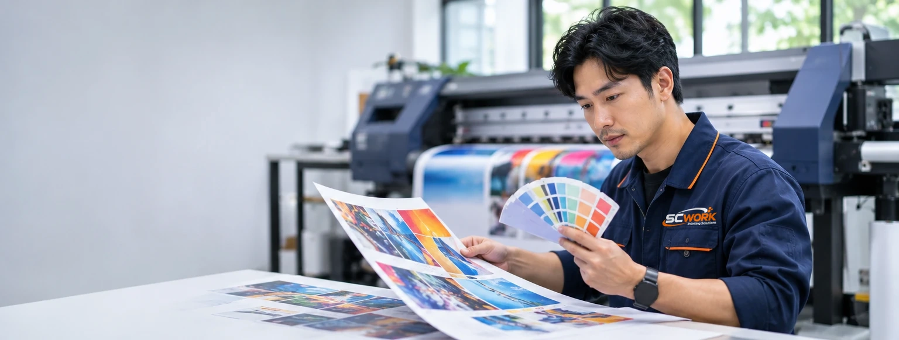
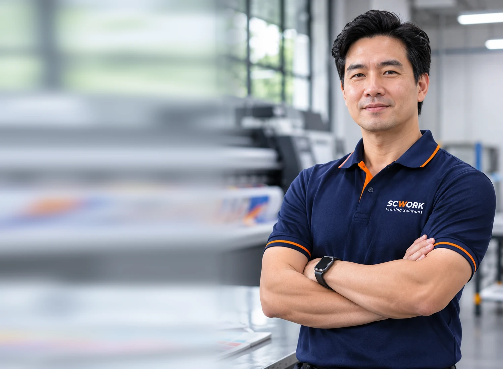
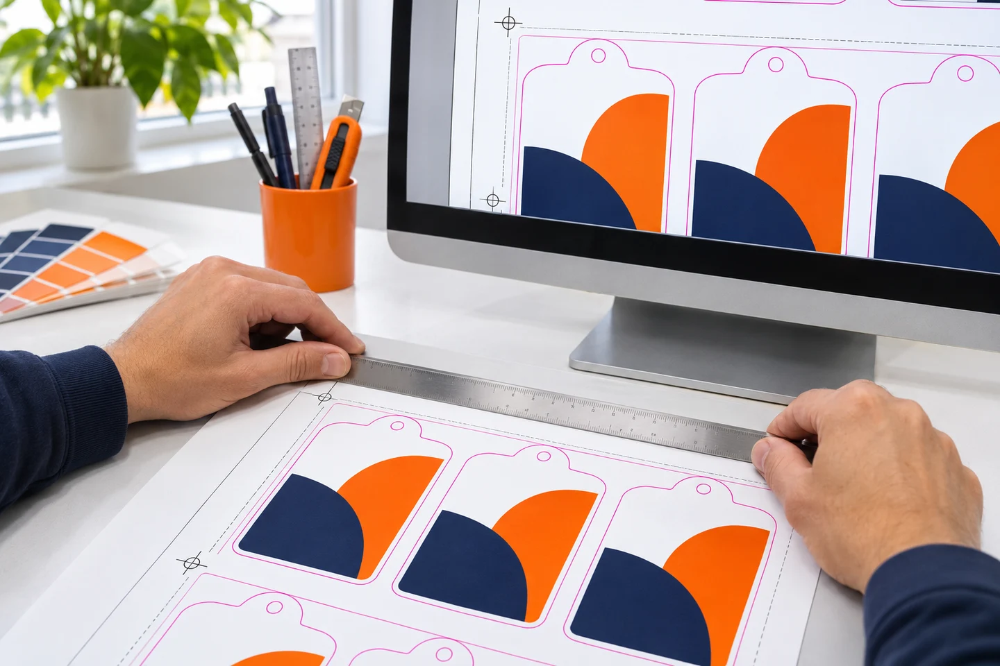
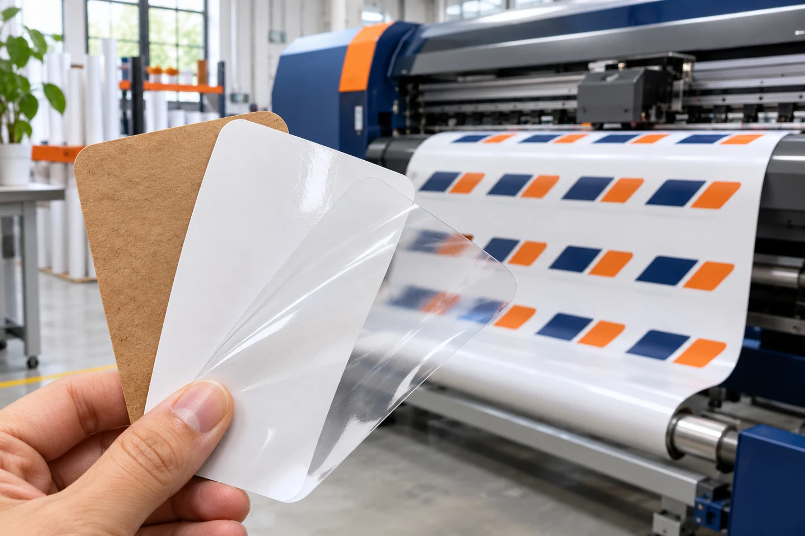
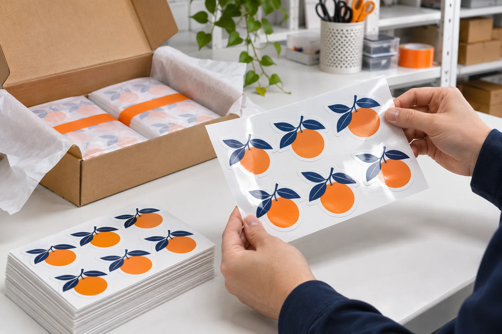

01 / EXPERTISE
Design Solutions
พัฒนางานออกแบบโดยคำนึงถึงอัตลักษณ์ของแบรนด์ วัตถุประสงค์ในการใช้งาน และข้อกำหนดทางการผลิต เพื่อสร้างสมดุลระหว่างความสวยงามและประสิทธิภาพ

SCWORK / DESIGN · PRODUCTION · TECHNOLOGY
จากแนวคิดสู่การออกแบบ จากการออกแบบสู่การผลิตจริง
เกี่ยวกับเรา
SCWork คือผู้ให้บริการและที่ปรึกษาด้านการออกแบบและการผลิต (Design & Production Consultant) ที่ผสานความเชี่ยวชาญด้านการออกแบบ ความเข้าใจในวัสดุ และกระบวนการผลิตเข้าด้วยกัน
เราพัฒนางานโดยคำนึงถึงวัตถุประสงค์ของธุรกิจ คุณภาพ ต้นทุน และความเหมาะสมในการใช้งาน เพื่อให้ทุกองค์ประกอบของงานออกแบบสามารถนำไปผลิตได้อย่างมีประสิทธิภาพ

หลักคิดในการทำงาน
Good Design Must Work.
เรามองว่างานออกแบบที่ดีไม่ใช่แค่สวยงาม แต่ต้องใช้งานได้จริง ตอบโจทย์การผลิต มีประสิทธิภาพ และเหมาะสมกับบริบทธุรกิจ
เราจึงให้ความสำคัญกับรายละเอียดในทุกขั้นตอน ตั้งแต่การพัฒนาแนวคิด การเลือกวัสดุ การกำหนดรูปแบบ ไปจนถึงกระบวนการผลิตและการส่งมอบ




ความเชี่ยวชาญของเรา
พัฒนางานออกแบบโดยคำนึงถึงอัตลักษณ์ของแบรนด์ วัตถุประสงค์ในการใช้งาน และข้อกำหนดทางการผลิต เพื่อสร้างสมดุลระหว่างความสวยงามและประสิทธิภาพ
ให้คำปรึกษาและบริหารกระบวนการผลิต โดยพิจารณาคุณสมบัติของวัสดุ เทคโนโลยีการพิมพ์ คุณภาพ ต้นทุน และความเหมาะสมของชิ้นงาน

ประยุกต์ใช้เทคโนโลยีและเครื่องมือดิจิทัล เพื่อเพิ่มความแม่นยำ ลดความซับซ้อน และพัฒนาประสิทธิภาพของกระบวนการทำงาน

กระบวนการทำงาน
ศึกษาความต้องการ วิเคราะห์ข้อกำหนด และประเมินความเป็นไปได้ก่อนกำหนดแนวทางการดำเนินงาน
พัฒนารูปแบบงานออกแบบให้สอดคล้องกับวัตถุประสงค์ วัสดุ และเงื่อนไขทางการผลิต
เชื่อมโยงรายละเอียดงานออกแบบเข้ากับกระบวนการผลิต โดยให้ความสำคัญกับคุณภาพ ความถูกต้อง และผลลัพธ์ในการใช้งานจริง
ความมุ่งมั่นของเรา
เรามุ่งสร้างความร่วมมือกับลูกค้าบนพื้นฐานของความเข้าใจ ความรับผิดชอบ และความโปร่งใสในการทำงาน
ให้ความสำคัญกับคุณภาพในทุกขั้นตอน พร้อมพัฒนากระบวนการทำงานอย่างต่อเนื่อง เพื่อส่งมอบผลลัพธ์ที่เหมาะสมกับความต้องการของลูกค้าและธุรกิจในระยะยาว
Design & Production Consultant
Ritthee Kolakij Co., Ltd.